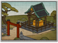
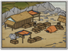

Buildings are used for the recruitment of military units and also subterfuge and religious agents. They also have a range of effects, either on a clan's economy or on the units and agents they produce. See each chain for details of how it can be used.
 Town
Town
Castle Chain
The castle is the heart of the population and public order's main controlling factor. Each level of castle building increases the size of its castle town: providing an additional slot on which to build, enabling the recruitment of basic ashigaru units and determining how many units can be recruited there in each turn. Larger castles are more difficult to assault and spawn a larger defence force of samurai retainers and women. They are also the chief consumer of food in a province, so if farm building levels are not in step with castle size there will be food shortages.
- Buddhist Sanctuary
Buddhist Chain
This chain of buildings enables the recruitment of sou agents and, in combination with a koryu dojo, warrior monk units. Those buildings higher up the chain provide warrior monks with greater experience and increase the happiness of a province's population.
 Encampment
Encampment
Improvement Chain
This chain of buildings improves your recruitment and replenishment capabilities, and can be specialised to improve the statistics of specific units.
 Bushi Training Grounds
Bushi Training Grounds
Bushi Chain
This chain of buildings enables recruitment of the new samurai troop types, including samurai heroes, also producing samurai cavalry when used in combination with pastures.

Enables recruitment of Rank 1 shirabyoshi
Each clan chain building enables you to sustain one additional shirabyoshi (to a maximum of 5)") Clan Estate
Clan Estate
Clan Chain
The clan chain of buildings enables recruitment of shirabyoshi agents, increases taxation within its province, and spreads your family's influence to nearby provinces.
") Barter Exchange
Barter Exchange
Barter Chain
This chain of buildings enables the recruitment of junsatsushi and provides a major contribution to province wealth. There are two sub-chains within it: one facilitates long-term growth, the other short to mid-term wealth.
: +1") Tadokoro
Tadokoro
Government Chain
This chain of buildings is the centre of government within a province. A government building cannot be demolished. There are two sub-chains within it: one focuses on public order and siege defence, the other recruitment and replenishment of armies.
 School
School
Intellectual Chain
This chain of province speciality buildings reduces the time required to master arts. It is the provincial version of the state academy.
 Koryu Training Grounds
Koryu Training Grounds
Koryu Chain
This chain of buildings enables recruitment of the old-style, mostly naginata-armed troop types, also producing warrior monks when used in combination with Buddhist buildings and naginata cavalry when combined with pastures. The highest level koryu buildings can also produce naginata hero, onna bushi, and tetsubo warrior monks.
 Artisans
Artisans
Craftwork Chain
This chain of province speciality buildings produce the craftwork commodity that can be traded and is required for the construction of certain other buildings. The craftwork chain can also be used to improve the quality of bows, giving a bonus to all bow units recruited in the same province.
 Placer Gold Mining
Placer Gold Mining
Gold Mining Chain
This chain of province speciality buildings improves your clan's income.
- Holy Site
Holy Site Chain
This chain of province speciality buildings improves the quality of all monk agents and warrior monk units recruited here, and is therefore of limited use to Christian clans.
 Iron Sands
Iron Sands
Iron Chain
This chain of province speciality buildings produces income and reduces the cost of recruitment in the same province, also providing the iron commodity that can be traded.
- Trade Hamlet
Naval Chain
This chain of province speciality buildings can be developed to either improve overseas trade income or increase the experience of locally-recruited ship crews.
") Isolated Hamlet
Isolated Hamlet
Assassin Chain
This chain of province speciality buildings either improves the quality of ninja or monomi agents recruited there and increases income, or increases the experience of kisho ninja units recruited there (not Rise of the Samurai).
 Blacksmith
Blacksmith
Smith Chain
This chain of province speciality buildings either improves the armour or melee attack statistics of certain locally-recruited units. The higher the level of building, the greater the number of troop types that can be improved.
 Lumber Camp
Lumber Camp
Timber Chain
This chain of province speciality buildings reduces the cost of locally-constructed ships and produces an income, also providing the lumber commodity that can be traded.
 Fields
Fields
Farming Chain
This chain of buildings provides food and is the principle source of income across your entire empire. Farms should be upgraded early in a campaign and often after that. Farms enable cavalry recruitment in the province when there are appropriate koryu or bushi buildings present.
- Trails
Infrastructure Chain
Each level of castle unlocks a new construction slot and fortification. It also increases the line of sight of your agents and their chances of detecting hidden enemy agents.
- Coastal Village
Port Chain
This chain of buildings enables the recruitment of ships. Those buildings higher up the chain facilitate overseas trading, increase economic growth, and can allow foreign powers to negotiate the export of their new weapons and ideas to Japan.
 Silk Workshop
Silk Workshop
Silk Chain
This chain of buildings facilitates silk production within a province, also generating wealth.